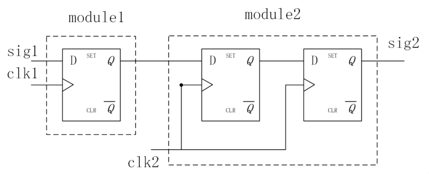
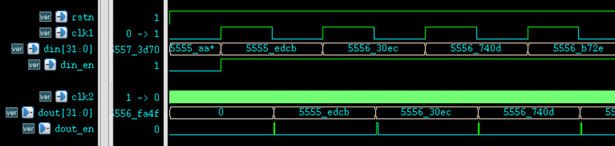

En teoría, las señales en el dominio de reloj rápido siempre capturarán las señales transmitidas desde el dominio de reloj lento. Si existe asincronía, puede causar errores en los datos muestreados, por lo que es necesario realizar un procesamiento de sincronización. Este tipo de sincronización es relativamente simple; generalmente se utiliza el método de retardo por registros o el método de muestreo retardado.
Método de retardo por registros
El método de sincronización más común es el método de almacenamiento en búfer con flip-flops de dos etapas, comúnmente conocido como método de retardo por registros. Antes de que una señal asíncrona entre de un dominio de reloj a otro, la señal se almacena en búfer dos veces consecutivas con dos flip-flops, lo que puede reducir eficazmente los problemas de metastabilidad causados por el incumplimiento de los tiempos. El diagrama del circuito es el siguiente.

En el diseño general, usar dos flip-flops para el almacenamiento en búfer es suficiente para cumplir con los requisitos de temporización del diseño. Numerosos experimentos demuestran que el almacenamiento en búfer con tres flip-flops puede resolver más del 99% de estos problemas de temporización asíncrona.
La descripción en Verilog del retardo por registros con dos flip-flops y la detección del flanco ascendente de la señal es la siguiente:
Ejemplo
input clk1, //reloj lento asíncrono
input sig1, //señal asíncrona
input rstn, //señal de reinicio
input clk2, //dominio de reloj rápido de destino
output sig2); //señal sincronizada en el dominio de reloj rápido
reg [2:0] sig2_r ; //3 niveles de búfer; los dos primeros para sincronización, los dos últimos para detección de flanco
always @(posedge clk2 or negedge rstn) begin
if (!rstn) sig2_r <= 3'b0 ;
else sig2_r <= {sig2_r[1:0], sig1} ; //almacenamiento en búfer
end
assign sig2 = sig2_r[1] && !sig2_r[2] ; //detección de flanco ascendente
Método de muestreo retardado
Este método se utiliza principalmente para la transmisión de datos de múltiples bits.
Por ejemplo, cuando la relación de frecuencia de dos relojes asíncronos es 5, primero se puede usar el método de retardo por registros para almacenar en búfer la señal de habilitación de datos en 2 etapas, y luego muestrear la señal de datos del dominio de reloj lento en el dominio de reloj rápido.
La idea básica de este método es garantizar el momento en que la señal se muestrea de forma segura, sin necesidad de sincronizar señales de datos de múltiples bits, lo que puede ahorrar algunos recursos de hardware.
La descripción en Verilog del muestreo retardado mediante el método de registros es la siguiente.
Ejemplo
//Los datos asíncronos provienen de un módulo con reloj de trabajo de 20MHz
module delay_sample(
input rstn,
input clk1,
input [31:0] din,
input din_en,
input clk2,
output [31:0] dout,
output dout_en);
//sync din_en
reg [2:0] din_en_r ;
always @(posedge clk2 or negedge rstn) begin
if (!rstn) din_en_r <= 3'b0 ;
else din_en_r <= {din_en_r[1:0], din_en} ;
end
wire din_en_pos = din_en_r[1] && !din_en_r[2] ;
//sync data
reg [31:0] dout_r ;
reg dout_en_r ;
always @(posedge clk2 or negedge rstn) begin
if (!rstn)
dout_r <= 'b0 ;
else if (din_en_pos)
dout_r <= din ;
end
//dout_en delay
always @(posedge clk2 or negedge rstn) begin
if (!rstn) dout_en_r <= 1'b0 ;
else dout_en_r <= din_en_pos ;
end
assign dout = dout_r ;
assign dout_en = dout_en_r ;
endmodule
El diagrama de resultados de temporización de este método se muestra a continuación.
Obviamente, en el dominio de reloj clk2, muestrear y almacenar en búfer los datos en el instante t2 es mucho más seguro que en el instante t1.

Pero si el dominio de reloj lento no tiene señal de habilitación de datos din_en, o si la señal de habilitación de datos está siempre activa, el método de detección de flanco ascendente de la señal de habilitación de datos en el dominio de reloj rápido fallará. Debido a que la señal de habilitación de datos está siempre activa, excepto para el primer dato, el dominio de reloj rápido no podrá detectar el momento de transmisión de los datos subsiguientes.
La solución es detectar el flanco de la señal de reloj lento en el dominio de reloj rápido.
Si la diferencia de frecuencia entre los dos relojes es pequeña, es posible que también sea necesario almacenar en búfer los datos con retardo para garantizar que lo que se muestrea son los datos del ciclo de reloj actual; si la diferencia de frecuencia es grande, el momento de muestreo de datos se puede obtener mediante un método de conteo, sin necesidad de almacenar los datos en búfer.
La descripción en Verilog para detectar el flanco del reloj lento mediante el método de muestreo retardado por conteo es la siguiente.
Ejemplo
//Los datos asíncronos provienen de un módulo con reloj de trabajo de 999KHz
module delay_cnt_sample(
input rstn,
input clk1,
input [31:0] din,
input din_en,
input clk2,
output [31:0] dout,
output dout_en);
//4 niveles de búfer: 3 niveles para sincronización por registros, 1 nivel para detección de flanco
reg [3:0] edge_r ;
always @(posedge clk2 or negedge rstn) begin
if (!rstn) edge_r <= 3'b0 ;
else edge_r <= {edge_r[3:0], clk1} ;
end
wire edge_pos = edge_r[2] && !edge_r[3] ;
//Contador de retardo; comienza a contar cuando se detecta el flanco ascendente del reloj lento
reg [5:0] cnt ;
always @(posedge clk2 or negedge rstn) begin
if (!rstn) cnt <= 6'h3f ;
else if (edge_pos && din_en)
cnt <= 6'h0 ;
else if (cnt != 6'h3f) cnt <= cnt + 1'b1 ;
end
//Sincronización de datos
reg [31:0] dout_r ;
reg dout_en_r ;
always @(posedge clk2 or negedge rstn) begin
if (!rstn)
dout_r <= 'b0 ;
else if (din_en && cnt == 47) //Muestreo aproximadamente en el punto medio del ciclo del reloj lento
dout_r <= din ;
end
//La señal de habilitación de datos se emite con un retardo de un ciclo respecto al instante de muestreo de datos
always @(posedge clk2 or negedge rstn) begin
if (!rstn) dout_en_r <= 1'b0 ;
else if (din_en && cnt==48)
dout_en_r <= 1'b1 ;
else dout_en_r <= 1'b0 ;
end
assign dout = dout_r ;
assign dout_en = dout_en_r ;
endmodule
El diagrama de resultados del muestreo sincronizado de datos con una gran diferencia de frecuencia es el siguiente.
Como se puede ver en la figura, el instante de muestreo del reloj rápido se encuentra aproximadamente en el punto central del ciclo del reloj lento, lo cual es muy seguro.
